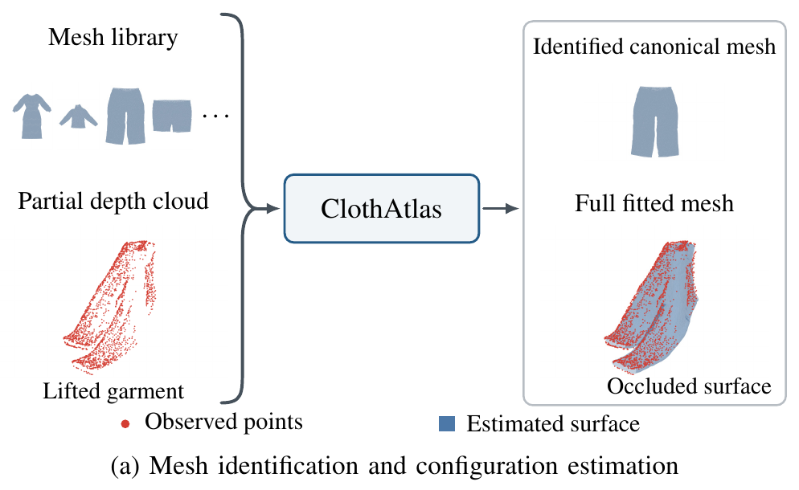
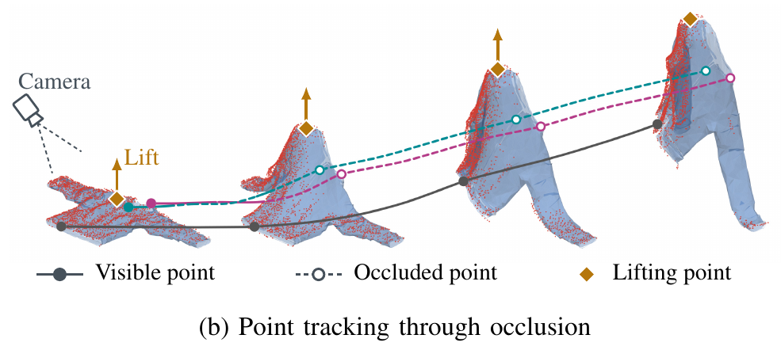
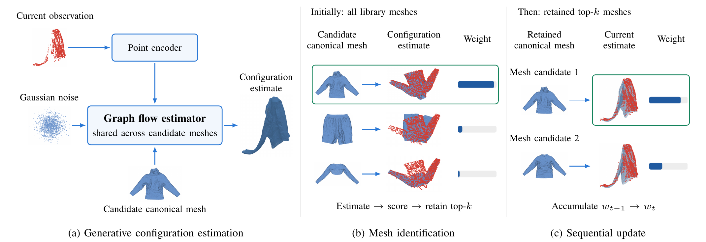
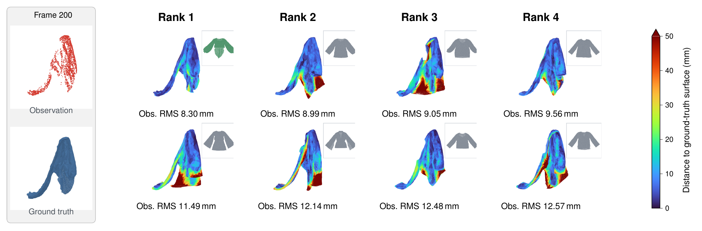
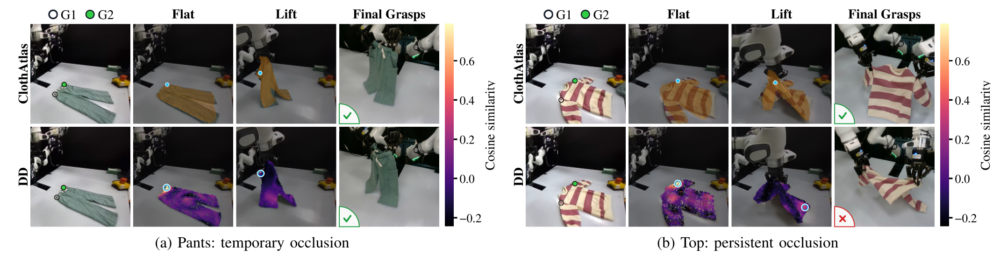

Garment manipulation requires inferring both garment identity and complete configuration from partial, self-occluded observations. This creates a chicken-and-egg problem: completing a partial observation requires a garment-specific deformation prior, while identifying the garment requires a configuration that explains the observation. We introduce ClothAtlas, which jointly identifies garments and estimates their complete configurations from partial point clouds and a library of canonical meshes. A shared graph-conditioned flow-matching model samples configurations for each candidate mesh and ranks candidates by observation fit. The model accommodates different mesh shapes, vertex counts, and connectivities, allowing new garments to be added from canonical meshes alone without retraining.
On held-out DexGarmentLab garments, ClothAtlas ranks the correct mesh first among 221 candidates for all 22 test garments from a single flat observation. From a single self-occluded observation, it identifies 15/22 garments, compared with 8/22 for a deterministic graph estimator. Persistent vertex identities support grasp-target localization on real garments, reducing mean error from 15.4 to 6.4 cm overall and from 17.0 to 8.3 cm on occluded targets compared with dense descriptor matching.


ClothAtlas approximates the joint posterior over garment identity and configuration by generating complete configurations and comparing their fit to the observations. For each candidate canonical mesh, a conditional flow-matching model generates configurations from the current point cloud. We identify the canonical mesh by accumulating observation-fit scores in the candidate weights across observations, and report the highest-weight candidate and its configuration estimate.


Held-out simulated garments at lift frame 200, without the correct canonical mesh supplied. The top-three candidates of ClothAtlas (upper row) and D-GNN (lower row) are colored by distance to the ground-truth surface; the green box marks the correct mesh. Select a garment above.
ClothAtlas accumulates observation-fit evidence over nine observations of a lifting action. Each timestep shows the current top-three candidates, their reconstructions colored by distance to the ground-truth surface, and the reconstruction RMSE; the green box marks the correct mesh.

The robot grasps the garment, lifts it, and then grasps a second target G2 that may be hidden from the camera. Green marks G2 and cyan its estimate. ClothAtlas tracks G2 through the persistent vertex identities of its completed mesh (blue); dense descriptor matching uses the best-matching visible point (heatmap). Videos in each row play in sync.
@article{lundell2026clothatlas,
title = {ClothAtlas: Joint Garment Identification and State Estimation under Self-Occlusion},
author = {Lundell, Jens and Longhini, Alberta and Shu, Lei and Arora, Hemal and Robert, Evan and
Par{\'e}s-Morlans, Carlota and B{\"u}sching, Marcel and Bj{\"o}rkman, M{\aa}rten and Bohg, Jeannette},
journal = {arXiv preprint},
year = {2026}
}